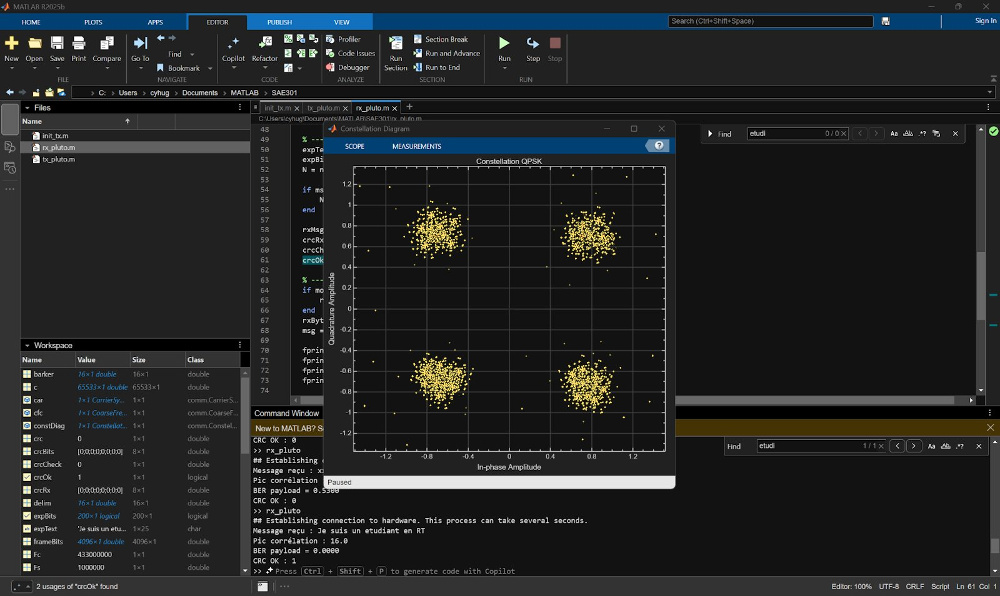

Application de chat d'entreprise souveraine
Conception d'une messagerie interne hébergée localement, alternative à Slack/Teams, avec accès protégé en profondeur, chiffrement des échanges, sauvegardes et plans de continuité.
Conception d'une messagerie interne hébergée localement, alternative à Slack/Teams, avec accès protégé en profondeur, chiffrement des échanges, sauvegardes et plans de continuité.
Projet de sensibilisation aux bonnes pratiques de cybersécurité (protection des données, phishing, mots de passe, malwares, etc.).
Configuration d'une Raspberry Pi avec administration distante via SSH, contrôle d'une LED, collecte et transmission de données de capteurs.
Analyse de documents techniques, étude des câbles et fibres optiques, compréhension des mesures et schémas de transmission.
Gestion des comptes utilisateurs, sécurisation des mots de passe, chiffrement des données avec LUKS sous Debian.
Mise en œuvre d'une chaîne de transmission numérique complète en radio logicielle : un message textuel est modulé en DQPSK, émis en RF puis décodé avec succès.
Ce projet s’inscrit dans la SAE « Hygiène informatique et cybersécurité » et avait pour objectif
de sensibiliser les utilisateurs aux risques numériques. En groupe, nous avons réalisé un
catalogue complet de vulnérabilités portant sur les mots de passe, les réseaux, les supports
amovibles, les mises à jour, les logiciels, les données personnelles et la sécurité matérielle.
Nous avons également étudié plusieurs scénarios d’attaque réalistes : phishing, malwares,
ransomware, attaques réseau ou encore infections par clés USB. Chaque menace a été analysée
selon son fonctionnement, ses impacts potentiels et les moyens de s’en protéger.
Réflexion personnelleCe projet m’a fait prendre conscience que la plupart des failles viennent d’abord des comportements humains : un bon mot de passe ou un peu de vigilance évitent souvent le pire.
Ce projet s’inscrit dans la SAE « S’initier aux réseaux informatiques » et a consisté à mettre en
place un système capable de mesurer la température et l’humidité d’une pièce à l’aide d’une
Raspberry Pi 4 et d’un capteur DHT22. Il combine réseau, électronique et programmation Python.
Après l’installation de Raspberry Pi OS, la carte a été intégrée au réseau local et son adresse IP
identifiée via netdiscover. Une connexion distante en SSH a ensuite été établie via Thonny pour
développer plusieurs scripts Python.
Les premiers programmes ont permis de contrôler des LEDs via les broches GPIO. Le capteur DHT22 a
ensuite été ajouté afin de relever en continu température et humidité. Un script final combinait
ces relevés avec le pilotage des LEDs : une LED verte s’allumait sous 25°C, et une rouge au-dessus.
Ce projet m’a permis de découvrir l’architecture de la Raspberry Pi, de manipuler des services
réseaux, et d’acquérir les bases de l’interfaçage de capteurs via Python.
Réflexion personnelleVoir une LED réagir à une mesure réelle m’a montré concrètement comment le réseau, l’électronique et le code travaillent ensemble, et m’a donné envie d’explorer davantage l’IoT.
Ce projet consistait à analyser des documents techniques pour comprendre comment les données circulent sur différents supports de transmission. Nous avons étudié les caractéristiques des câbles et des fibres optiques, ainsi que les mesures et les schémas permettant de caractériser une liaison.
Réflexion personnelleCe projet m’a montré que derrière chaque connexion se cache une infrastructure physique précise, et qu’apprendre à lire une documentation technique est une compétence aussi importante que la pratique.
Ce projet portait sur la sécurisation d’un système Debian. J’ai géré les comptes utilisateurs, renforcé la sécurité des mots de passe et chiffré des données avec LUKS afin de les protéger en cas d’accès non autorisé à la machine.
Réflexion personnelleJ’ai compris qu’un chiffrement bien configuré protège réellement les données, mais qu’il demande de la rigueur : une erreur de manipulation peut rendre l’accès impossible, même pour son propriétaire.
Ce projet propose une application de chat d'entreprise souveraine et ultra-sécurisée, pensée comme une
alternative locale aux solutions américaines (Slack/Teams). Face aux enjeux de souveraineté numérique et
de dépendance aux plateformes étrangères, l'objectif est de permettre à une entreprise de communiquer en
interne sans exposer ses données.
L'application offre les fonctions d'une messagerie classique (chat 1:1, conversations d'équipe, canaux par
service ou projet, partage de fichiers, recherche, notifications et historique à durée de conservation
configurable), avec des données hébergées et administrées par l'entreprise. La sécurité repose sur
plusieurs barrières, de sorte qu'un compte volé ne suffit pas à entrer, et sur des innovations possibles
comme la sécurité adaptative ou la double validation des actions critiques.
Le projet couvre aussi l'exploitation : sauvegardes automatiques quotidiennes avec stockage secondaire
isolé, supervision et maintien en condition opérationnelle, plans de continuité et de reprise (PRA, PCA,
PRI, PCI) illustrés par des scénarios de crise, et engagements de service (disponibilité de 99,9 %, GTI 2 h
pour les incidents critiques, GTR 4 h pour les demandes standard).
Réflexion personnelleCe projet m'a fait comprendre que la sécurité d'un outil ne se limite pas au chiffrement : elle dépend aussi de l'exploitation au quotidien (sauvegardes, supervision, plans de reprise). Choisir où sont stockées ses données, c'est aussi choisir de qui l'on dépend.

Ce projet consistait à mettre en œuvre une chaîne de transmission
numérique complète avec la radio logicielle (SDR) et des modules ADALM-PLUTO : un message textuel est
transformé en signal RF, puis décodé à la réception.
Côté émetteur, les données sont structurées en trame (en-tête « $$$ », octet de longueur et message), modulées
en DQPSK, choisie pour sa robustesse face aux rotations de phase, puis filtrées par un filtre en cosinus
surélevé (RRC) qui limite l'encombrement spectral et l'interférence inter-symboles.
Côté récepteur, le signal capté est normalisé par un contrôle automatique de gain, corrigé en fréquence,
filtré, puis synchronisé en symbole (algorithme de Gardner) et en porteuse. Le diagramme de constellation
montre quatre nuages bien distincts, le taux d'erreur binaire est nul, le CRC est validé et le message
« Je suis un etudiant en RT » est décodé avec succès.
Réflexion personnelleVoir apparaître mon message décodé sans erreur m'a montré à quel point la synchronisation est déterminante : sans elle, la chaîne ne fonctionne tout simplement pas. La SDR m'a aussi fait mesurer la liberté qu'apporte un système entièrement programmable.
Photos : serveurs, Victorgrigas, CC BY-SA 3.0 ; fibre optique, Hustvedt, CC BY-SA 3.0